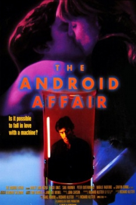

Country:United States, 90 minutes
Spoken languages:
Genres:Sci-Fi
Director(s):Richard Kletter
Writer(s):Richard Kletter
Video Codec:Unknown
Number: 1992


Certification:PG-13
Storyline:
Karen Garrett, a promising young doctor, is assigned to perform a difficult operation on Teach, an advanced android who has never "blanked" (had his memory erased.) She soon realizes that Teach is much more than an assignment, and is drawn to his desire for a very human life. When Karen takes Teach into the outside world, they soon discover that there is something far more mysterious and dangerous than a medical experiment planned for them.
Cast:
Medium: Original DVD,
Comments: Part of: The Ultimate Sci-Fi Movie Marathon
Loaned: No
Aspect ratio: Unknown